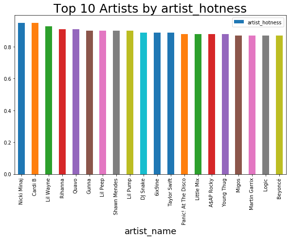

Music is a crucial element of everyday life and human culture. People spend several hours listening to it
and
lots of money acquiring it. “… Whenever humans come together for any reason, music is there,” writes Daniel
Levitin “….weddings, funerals, graduation from college, men marching off to war, stadium sporting events, a
night on the town, prayer, a romantic dinner, mothers rocking their infants to sleep and college students
studying with music as a background….”
History tells that very early man developed primitive flutes from animal bones and used stones and wood as
percussion, producing the first types of music. Voice would have been the first and most natural means of
expression in our distant ancestors, used to bond socially or comfort a sleepless child. It is from these
humble
beginnings that the music we enjoy today evolved.
Why is music so important? Because it is a way to communicate with others through songs and melody and convey
people's feelings and emotions in life, allowing us to find confort and feel inspired by the songs. Music has
always been present in every culture around the world, representing their esscence, feelings and beliefs.
Music is never stagnant and continues to change and evolve in each time period, having a dynamic behavior of
people's preferences in terms of genres, artists and songs, such behaviour is closely linked with music
accesibility.
We’re now deep in the digital era, with the explosion of the internet, and music Services as Apple Music,
Spotify, Tidal and other apps and
platforms; it has become easier to share,
obtain and have instant access to huge collections of songs.
This project aims to analyze the evolution of music since the 2000s in terms of
songs/genres/artists popularity and preferences, evaluate the key features of the songs, such as energy,
valence, danceability, and others.
We aim to show and understand which were the most popular genres in the last years, the most popular songs,
the
most important artists and what were the trends of the key features of those hits.
Dataset
For this purpose, we'll work with two datasets:
FMA: A Dataset For Music Analysis
Free Music Archive (FMA), is an open and easily accessible music dataset.
The dataset contains the information of 106,574 tracks from 16,341 artists and 14,854 albums,
arranged in a hierarchical taxonomy of 161 genres. It provides full-length and high-quality audio,
pre-computed features, together with the track- and user-level metadata, tags, and free-form text
such
as
biographies. Most useful features from user-level metadata were extracted and used in the current
analysis.
Spotify and LastFM API
: It consists of our crawled dataset created using Spotify and LastFM API.
To complete the previous dataset and extend our analysis to the last years, information from years
2015-2018 was gathered from Spotify and LastFM API.
Both datasets were merged into a one complete dataset containing information for the analyzed time interval
which
comprises from the year 2000 to 2018. The results and findings are summarized in the following lines.
How many songs and albums?
Music, like all other arts, evolve over the years and dynamically change according to people's interests
and
demands. Along
history, several genres emerged in different periods of time, in most of the cases influenced by the region
of
origin and particular events occurring at that time. The decade of the 2000s, characterized by the
increasing
interest in internet technologies and social media marked a very important milestone in technological evolution
and surely had a crucial impact on music evolution. After this period, such technological evolution
continued with the explosion of streaming and cloud
services, and the increasing popularity of portable and smart devices, which reflects on how people access and
consumes music and has definitely impacted on their preferences.
We aim to analyze
and understand such music evolution, from 2000 to 2018 in terms of quantity, people's preferences, and
songs
features. To visually understand the growth of music production/consumption over the years, let's see how
many tracks and albums were produced throughout the years.
The production of tracks and albums has increased exponentially over the years and as expected, the
production of albums is positively correlated with the production of tracks. This growth is clearly aligned with
the increasing popularity of music streaming services since 2009, where countless pieces of internet-connected
hardware offer instant access to tens of millions of music tracks.
In year 2014, we have a decrease of number of albums/tracks, but it is due to the limited amount of data of FMA
dataset and the limit of API Spotify requests that were mostly used to complete the information of the years
2015 to 2018. For the last year (2018), we can also see a decrement of music production, but it is due to data
collection which
does not collect the whole year but only until October.
Have you listened to it?
Song preferences and their popularity (also called hotness) over the years are difficult to predict and never
follow a perfect recipe
since even "similar" people have different music preferences.
Usually, popular songs are the catchy, compelling and commercial ones, meaning they are well crafted and
connect to a broad audience and it causes an action on the part of the listener. It may make them cry,
laugh,
dance, go purchase the song, or simply it causes them to react. Exposure to the song may
also cause them to become more wanted by people, hearing a song enough times makes them "grow on you".
However, and as stated initially, it is impossible to find specific patterns or rules that make songs
popular. Let's show how the songs and albums popularity evolved in the analyzed time interval, the way to
measure popularity is represented by the number of listens in the platforms Spotify/FMA.
Let's find your favorite artists!
Artists popularity is closely linked to their song's popularity, in most cases, it can be measured by their
sales and the number of listens they have. Some artists are able to stay popular for a long time due to
their constant release of hits, but others have a temporal and short popularity marked by a unique or few
successes. Do you think your favorite groups/artist will show up in the list of the most popular of the last
years? Let's explore the rankings.

These rankings coincide with the artists that have the higher number of streams in Spotify and also with
their number
of followers. But have you noticed that most of the artists listed are the most trending artists of the last
years? It is important to remember that the information displayed belongs to Spotify and FMA datasets and the results belong to the most listened artists in such platforms, so it is logical that more recent
artists will tend to appear in the top listens as their music accesibility also increased.
How many of your favorite artists have you found in the list?
How about the trending genres?
Music genres are conventional categories that identify songs/artists as belonging to a shared tradition or
set of conventions. Music can be divided into different genres and these classifications are often
subjective and controversial, and some genres may overlap. Over the years many new genres have appeared by
the transformation or influence of other genres. This dynamic behavior, which causes genres popularity to
change over time, is also generated by fluctuating people's demands and interests. Now, we present an
interactive visualization which depicts the genre's evolution in the last five years, considering only the
top
10 most popular genres. Their popularity (or hotness) is measured by the mean of all artists hotness who
released songs that year and that belong to that specific genre. Let's explore the results!
Top Genres and Artist according to Hotness from 2013 to 2018
Genres
You can explore the genre's popularity, by moving the cursor over the colored areas.
They represent the top 10 genres (based on song hotness) in the time interval 2013 to 2018.
The genres are: Rock, Pop, International, Instrumental, Experimental, Easy Listening,
Country and Blues. The time interval was considered for the last five years, due to genre variability
over time. For every year, each of the genres is represented by their hotness,
which is obtained by the mean of all songs hotness released on the specified year.
Exploring song Features
The analyzed dataset contains the song's metadata and audio features of each song. How about exploring some
of
these features and their evolution over the years? Are they somehow related to genres/artist evolution?
These features can also help us measure the variations of music during one year, and to achieve higher
granularity we split the analysis by the seasons of the year (e.g summer, winter, autumn, and spring). All
the songs that were released during the same season are grouped together and the mean of their valence,
energy, and danceability is calculated. The three features are measured on a scale from 0.0 (being the least) to
1.0 (being the most).
Let's explore the results. You can choose the feature you'd like to visualize by clicking on one of the buttons below.
Danceability
Danceability seasons 2000-2010
Danceability seasons 2010-2018
How are song features related?
Have you found any relation between danceability/valence/energy of a song? By applying Machine Learning clustering techniques we'll analyze if such features are similar among songs of the same genre or artist. For this analysis we consider the three mentioned features plus an additional one called song_hotness for each of the tracks. For visualization purposes, we reduce the number of features to three by applying t-Distributed Stochastic Neighbor Embedding (t-SNE) technique, that is particularly well suited for the visualization of high-dimensional datasets. Now, we are ready to visualize the tracks in three dimensions and to cluster them based on their similarity or proximity on the three dimmensional space.
To better visualize the clustering of the tracks, we sampled around 10,000 tracks and defined 8 clusters to group them. Then we applied K-means clustering algorithm, which is a type of unsupervised learning. The goal of this algorithm is to find groups in the data, with the number of groups represented by the variable K (K=8). The algorithm works iteratively to assign each data point to one of K groups based on the features that are provided. Data points are clustered based on feature similarity. Let's dive into the three dimmensional space! You can explore each of the points by moving the cursor over them and some information will be displayed (artist, title, album, year, genre). You can click on the cluster names listed on the right to unselect them and only display some information.
Tracks in the 3D space
Songs grouped in the same cluster usually share some similarities like genres or artist. While exploring cluster 1, which is the biggest one, we can see that most of the songs belong to Experimental, Rock, Electronic and Pop genres. If we dig deeper we can see some similarities in released date and artists for tracks wich are very close in distance. These similarities can also be found on the other clusters, which leads us to conclude that songs features such as energy, danceability and valence are inheritely related the genres, which also confirms our previous observations where we showed the features fluctuations in the last years and compared them with the genres popularities. Having genres Rock, Pop, Country with increasing popularity in the last years is reflected by the overall increasing danceability of the songs!
Conclusions
Our analysis has shown the evolution of music since 2000, the most
popular genres, artists and songs for the past years, and how some key song features evolved over time.
Some interesting results and observations:
Music Growth: Songs and albums production has increased over the years and is aligned with the popularity and explosion of music streaming services.
Music Popularity:
Artist/song popularity vary depending on the metric considered and the platform which provides it. The more accesible the song, the higher its popularity. Are you still surprised why most of top artists/song are the latest trending ones of the past years?
Genres popularity is very dynamic and therefore difficult to compare over long time intervals. Some genres may have a steady popularity for several years, but most of them have their peaks and depths throughout the years. To overcome this variability, we focused on a shorter time interval and observed and increasing popularity of Rock, Pop, Country, International. Music Streaming services have also impacted on the growth of some "small" genres, by making them globally available with some clicks.
Song features evolution:
Song features depend on the genre and artist as seen on clustering algorithm. Danceability had a constant increase over the last years, caused by increasing popularity of Pop, Rock, International and Country. Energy had a decrease since 2014. Valence had an increase until year 2010 and then a decrease, to our surprise danceability and valence are not positively correlated. Weather and season of the year have an impact on the type of songs produced, higher energy songs are produced during summer, while higher danceable songs are produced in winter.